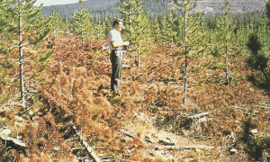

|
|
Fire Behavior Fuel Model 12 -- Medium Logging Slash |
Anderson (1982) classifies Fire Behavior Fuel Model 12 in the Logging Slash Fuel Type and describes it as follows:
Rapidly spreading fires with high intensities capable of generating firebrands can occur. When fire starts, it is generally sustained until a fuel break or change in fuels is encountered. The visual impression is dominated by slash and much of it is less than 3 inches (7.6 cm) in diameter. The fuels total less than 35 tons per acre (15.6 t/ha) and seem well distributed. Heavily thinned conifer stands, clearcuts, and medium or heavy partial cuts are represented. The material larger than 3 inches (7.6 cm) is represented by encountering 11 pieces, 6 inches (15.2 cm) in diameter, along a 50-foot (15-m) transect.
Anderson's (1982) photographs 34, 35, and 36 are examples of fuels fitting this model.
| Anderson (1982) Photo 34, Fire Behavior Fuel Model 12. Ponderosa pine clearcut east of Cascade mountain range in Oregon and Washington, USA. |
|
| Anderson (1982) Photo 35, Fire Behavior Fuel Model 12. Cedar-hemlock partial cut in northern Idaho, USA. |
|
|  | Anderson (1982) Photo 36, Fire Behavior Fuel Model 12. Lodgepole pine thinning slash on the Lewis and Clark National Forest, Montana, USA. Red slash condition increases classification from light to medium. |